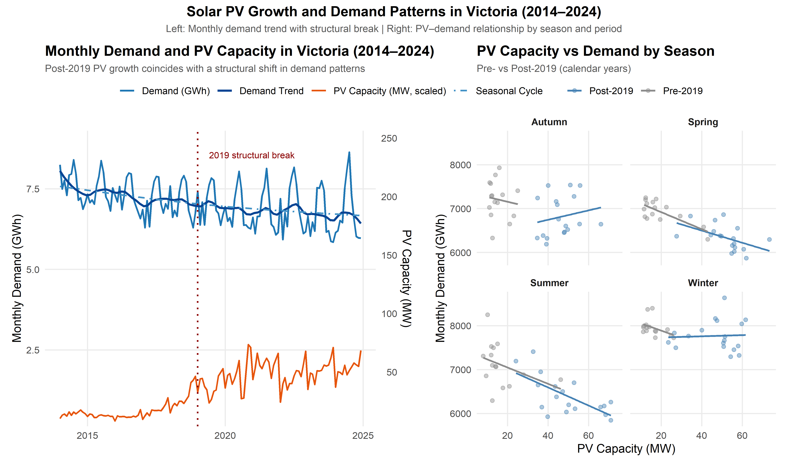
Modeling Weather-Dependent Electricity Demand in Victoria Using Generalized Additive Mixed Models (GAMMs)
1 Abstract
Accurate electricity demand forecasting is critical for power system planning, operation, and reliability—particularly as the relationship between demand and weather evolves under the influence of climate variability and the growth of behind-the-meter renewable generation.
This project develops a weather-dependent load forecasting framework for Victoria (Australia). The model integrates electricity demand, meteorological, and rooftop solar data from the Australian Energy Market Operator (AEMO), Bureau of Meteorology (BoM), and Clean Energy Regulator (CER). Half-hourly grid demand is aggregated to daily totals and merged with temperature and solar exposure from three meteorological stations.
To capture a unified weather signal, Principal Component Analysis (PCA) removes spatial redundancy and extracts dominant temperature and solar drivers. In parallel, a Gaussian Mixture Model (GMM) defines local weather-based seasons, providing a data-driven alternative to fixed calendar seasons.
A Generalized Additive Mixed Model (GAMM) predicts daily electricity demand as a nonlinear function of temperature, temperature range, and solar exposure, while accounting for calendar effects and autocorrelation. The model captures key nonlinearities—such as the U-shaped temperature–demand relationship and asymmetric solar effects linked to rooftop PV saturation.
Empirical results show strong performance, achieving R² ≈ 0.94 and MAPE ≈ 3.28% (Figure 12) on out-of-sample data. Overall, the interpretable and adaptive GAMM framework enhances short-term forecasting capability and supports the State Electricity Commission (SEC) Victoria in data-driven planning that incorporates weather variability and solar exposure effects associated with distributed PV.
All analysis and modeling were conducted in R, primarily using the tidyverse for data manipulation, mclust for GMM clustering, and mgcv for GAMM modeling. Custom R scripts were written for data integration, feature engineering, and evaluation, with results visualized using ggplot2.
The full analysis and reproducible workflow are available on GitHub1. As discussed in Section Section 7, the reproducible scripts on GitHub enable further experimentation.
2 Introduction
Electricity load forecasting is a cornerstone of modern energy management, underpinning operational planning, market bidding, and infrastructure development. As renewable integration and weather variability intensify, accurate demand forecasts have become more critical than ever. Among all influencing factors, weather conditions are among the most dominant drivers of short-term electricity consumption. Temperature extremes(very hot or cold days)trigger surges in cooling or heating demand, while mild weather suppresses overall usage. Solar radiation and related climatic variables also shape consumer behavior and net grid demand, particularly through rooftop photovoltaic (PV) generation and air conditioning patterns.
In contemporary power systems, the increasing penetration of renewable and distributed energy resources amplifies the need to explicitly account for these weather–demand interactions. Traditional time-series models effectively capture temporal autocorrelation but often overlook exogenous weather influences, whereas purely regression-based or machine learning models can incorporate weather data yet struggle with nonlinear relationships and multicollinearity among predictors.
To address these challenges, this report explores an advanced approach that integrates time-series structure with nonlinear weather effects, aiming to enhance both forecast accuracy and interpretability for daily electricity demand in Victoria, Australia, focusing on Melbourne and surrounding regions.
2.1 Background
Victoria’s electricity system is undergoing a structural transformation driven by decarbonisation policy, renewable investment, and rapid household PV adoption. The State Electricity Commission (SEC) of Victoria, re-established in 2023, plays a central role in this transition as a government-owned energy company focused on accelerating renewable investment, supporting household electrification, and building Victoria’s renewable energy workforce. Since the launch of the Solar Homes Program in 2018, rooftop PV installations across Victoria have expanded rapidly, contributing to increasingly irregular grid-level demand patterns. This shift signifies a broader structural transformation in how economic activity translates into electricity consumption. Weather has long been a dominant determinant of electricity demand; however, its impact has now changed, reflecting growing behavioural and structural sensitivities driven by behind-the-meter renewables—particularly rooftop PV—and the ongoing process of electrification. Consequently, load profiles have become more responsive to climatic and behavioural factors than ever before.
2.2 Literature Context
In this project, daily demand is modelled instead of half-hourly load to focus on broader weather-driven trends while mitigating short-term noise related to intraday variability.
Modern forecasting approaches, including machine learning (ML) and advanced statistical models, are increasingly applied to capture nonlinear relationships between weather and electricity demand (Misiurek, Olkuski, and Zyśk 2025). However, these data-driven methods often lack interpretability, which limits their usefulness for understanding the underlying drivers of energy-system change (Baur et al. 2024).
In contrast, Generalized Additive Models (GAMs) and their extension, Generalized Additive Mixed Models (GAMMs), balance flexibility with transparency by allowing smooth nonlinear effects of predictors such as temperature and solar exposure while preserving interpretability of each variable’s contribution (Hastie and Tibshirani 2017; Wood 2017). The GAMM framework, implemented via the mgcv package in R (Wood 2017), further accounts for correlated errors and hierarchical effects through the inclusion of random effects or correlation structures—particularly relevant for daily aggregated demand data, where residuals may exhibit temporal dependence due to persistent weather and behavioural factors.
Applications of GAM-based models have therefore gained popularity in load forecasting because they bridge the gap between accuracy and interpretability, providing insights that purely data-driven approaches cannot (Fan, Zhang, and Wang 2022; Misiurek, Olkuski, and Zyśk 2025).
To support such interpretable modeling, it is equally critical to construct representative and spatially consistent weather features. Historically, utility forecasters have incorporated weather variables — especially temperature into regression or time-series models to improve forecast accuracy. Those approaches often relied on a single representative weather station or used equal-weight averages across several nearby stations. Recent studies highlight more advanced techniques for integrating spatially distributed weather data, such as dimensionality reduction and unsupervised clustering of meteorological features (Neumann, Heine, and Fichtner 2023). For example, Principal Component Analysis (PCA) can be used to construct a “virtual weather station” that summarises the dominant shared variation across multiple sites—capturing a unified temperature and solar signal that represents regional weather conditions (Neumann, Heine, and Fichtner 2023).
In Australia, the Australian Energy Market Operator (AEMO 2024) has adopted weather-normalisation practices consistent with this rationale, underscoring the importance of interpretable models that can capture evolving climate and weather effects on electricity demand. There is a growing need for adaptive forecasting models that can represent how electricity-use patterns evolve with climate variability and increasing rooftop-solar adoption. As more households install PV systems, midday grid demand drops and evening peaks intensify—the well-known “duck-curve” effect—highlighting the importance of models that can dynamically represent these changing demand behaviours. Similarly, clustering approaches such as Gaussian Mixture Models (GMMs) can identify typical weather regimes or local seasons, helping to overcome the mismatch between calendar-based seasons and real energy-consumption behaviour (Aquila et al. 2023).
2.3 Motivation
For energy market participants such as the State Electricity Commission (SEC) Victoria, accurate short- and medium-term electricity demand forecasting (short-term: up to two weeks; medium-term: up to one year) is critical for maintaining system reliability, supporting market bidding strategies, and guiding investment planning. Reliable forecasts underpin decisions on reserve allocation, energy procurement, and integration of renewable generation within the National Electricity Market (NEM). However, existing forecasting models often rely on static, linear relationships that fail to represent the evolving, nonlinear effects of weather and rooftop solar adoption on electricity demand. Hence,this study is motivated by SEC Victoria’s need for an adaptive and interpretable modelling framework that can quantify how weather and distributed generation jointly influence electricity demand while providing transparent insights to support evidence-based decision-making in the evolving energy market.
2.4 Objectives
The key research question guiding this study is: How can daily electricity demand be forecast more accurately and interpretably by incorporating weather dependencies and evolving solar impacts?
To address this question, the project pursues four high-level objectives aligned with SEC Victoria’s role as an energy market participant:
Integrate regional weather information — consolidate temperature and solar data from multiple locations to represent Victoria’s dominant weather patterns. This enables SEC to better anticipate climate-driven fluctuations in demand across the state.
Characterize nonlinear thermal relationships — quantify how temperature and solar exposure jointly influence demand through heating and cooling effects. Understanding these nonlinear responses supports more reliable operational and market forecasts under extreme or changing weather conditions.
Define data-driven seasonal regimes — identify flexible, weather-based “local seasons” that align with actual energy-use behaviour rather than rigid calendar definitions. These insights improve SEC’s ability to interpret seasonal demand dynamics and manage forecasting under climate variability.
Develop an interpretable forecasting framework — build and evaluate a transparent, adaptive model that links weather, solar adoption, and behavioural patterns to electricity demand. The resulting framework enhances SEC’s analytical capability to forecast demand accurately, communicate insights clearly, and inform decisions on reliability planning, market participation, and renewable integration.
The detailed exploratory analysis supporting these objectives is presented in Section 4. Together, these objectives aim to deliver a transparent and adaptive forecasting framework with high predictive accuracy while deepening understanding of how weather and behavioural factors shape daily electricity demand — supporting the State Electricity Commission (SEC) Victoria in data-driven energy system planning.
2.5 Significance
Improving load forecast accuracy has tangible benefits for the State Electricity Commission (SEC) Victoria. Even small reductions in forecasting error can translate into substantial cost savings and operational efficiencies. The accuracy achieved by our weather-informed GAMM framework — yielding daily errors of only around 3–4% (R² ≈ 0.94)—is therefore of significant practical value. Beyond accuracy, the model provides interpretability by quantifying how temperature, solar exposure, and local seasonal regimes influence electricity demand. These insights help energy market decision-makers understand the impact of climate variability and rooftop PV adoption on energy consumption. This project was undertaken as part of a university capstone in collaboration with a government energy agency, highlighting its applied and policy-relevant significance.
The remainder of this report is organized as follows. Section 3 describes the data sources and preprocessing procedures used to construct the integrated demand–weather dataset. Section 4 presents the exploratory data analysis (EDA), highlighting key patterns and relationships that justify the adoption of local-season clustering and guide the feature engineering process that motivates the modelling approach. Section 5 outlines the modelling framework and overall workflow of the Generalized Additive Mixed Model (GAMM), covering the processes of model fitting, evaluation, residual diagnostic checking, and forecasting. Section 6 summarizes the overall model fitting outcomes from Section 5 and interprets the model components. Finally, Section 7 and Section 8 present the principal findings, discuss implications for system planning, and identify limitations and directions for future improvement.
3 Data and Pre-processing
3.1 Data Sources
We utilize three primary data sources covering July 1, 2013 through August 5, 2025:
Electricity Demand Data: Region-wide half-hourly load data for Victoria were sourced from the Australian Energy Market Operator’s VIC1 Scheduled Demand dataset (AEMO 2024). These measurements represent the total electrical demand drawn from the transmission grid, excluding behind-the-meter generation such as rooftop photovoltaic (PV) output and other non-scheduled, self-consumed renewable generation. In other words, the data reflect only grid-supplied demand after the impact of distributed solar generation has been netted out.
Weather Data: Daily meteorological observations were obtained from the Australian Bureau of Meteorology (BoM, 2024) for three representative stations in Victoria—Melbourne (Olympic Park), Morwell (Latrobe Valley east inland), and Ballarat (higher-altitude inland). For each station, we collected daily maximum temperature (Tmax, °C), minimum temperature (Tmin, °C), and global solar exposure (Solar, MJ/m²). These locations were selected to capture the state’s climatic diversity—urban coastal, valley inland, and elevated inland regions—and to ensure broad coverage of weather conditions that influence electricity demand. Importantly, these same stations are also used by AEMO for state-wide energy demand forecasting, providing alignment with established industry practice and enhancing the robustness of this study’s weather representation.
Rooftop PV data: Postcode-level PV installation capacity and system counts from the Clean Energy Regulator (Clean Energy Regulator (CER) 2024). These data reflect the cumulative installed PV capacity (kW) and monthly installation growth since 2011.
Together, these three datasets provide a comprehensive 12-year record linking Victoria’s electricity demand, meteorological variability, and rooftop solar adoption — forming the foundation for the exploratory analysis and modeling that follow.
3.2 Data Processing and Quality Checks
3.2.1 Data Integration
Aggregation: Half-hourly AEMO demand data were summed across 48 intervals per day to produce daily total demand (MWh).
Alignment: Daily BoM weather variables (Tmax, Tmin, Solar exposure) were merged with demand data by date.
PV data integration (complementary): CER monthly rooftop PV capacity (kW) and installation counts (by postcode) were aggregated to the state level (Victoria) and incorporated as contextual data to indicate the structural shift in grid demand associated with rapid PV uptake(Australian Energy Council 2019; Essential Services Commission 2025). These data were not used as model inputs, but rather to inform period selection and interpretation.
The final integrated dataset spans 1 July 2013 – 30 June 2025, ensuring consistent temporal alignment across sources.
3.2.2 Data Cleaning and Validation
Following these steps, the dataset was visually inspected and statistically verified for completeness and plausibility, providing a robust foundation for exploratory data analysis.
Before modeling, data consistency across sources was verified. The AEMO demand data were generally complete, but all entries were checked for irregularities such as negative values or implausible spikes. None of these anomalies were significant.
The weather station data contained a very small proportion of missing days (<1%), mainly due to short sensor outages. A small number of missing daily weather readings (<1%) were filled using linear interpolation (zoo::na.approx()), which is appropriate for short, continuous time series with smooth temporal variation.
After cleaning, all variables were visually inspected and statistically validated to confirm internal consistency and temporal alignment.
4 Exploratory Data Analysis
Following the integration and validation of all data sources, exploratory data analysis (EDA) was undertaken to uncover relationships and structural patterns that guided feature construction and model development.
4.1 Demand Trends and Seasonality
As shown in Figure 1, Victoria’s grid-supplied demand (2014–2024) shows a slight overall decline, strong seasonality (winter heating and summer cooling peaks), and rising intra-season variability.
The left panel indicates a structural change around 2018–2019, coinciding with the rollout of the Victorian Solar Homes Program and rapid rooftop PV uptake. Since then, midday grid demand has flattened and within-year fluctuations have increased, reflecting the influence of behind-the-meter generation. The right panel confirms a regime shift: across all seasons, the PV–demand relationship has moved such that post-2019 observations exhibit lower grid demand for a given PV capacity than pre-2019.
Together, these patterns indicate a PV-influenced regime post-2019. To model the modern demand–weather dynamics and maintain stationarity, we define the modeling window as July 2019 – June 2025; earlier data are retained only for historical context and visualization.
4.2 Weather Station Relationships and PCA Unification
As shown in Figure 2, daily electricity demand in Victoria exhibits a clear nonlinear (V-shaped) relationship with both Tmax and Tmin at Ballarat, Melbourne (Olympic Park), and Morwell. Demand rises under heat (cooling load) and cold (heating load) periods, and is lowest on mild days. Solar exposure shows a weaker, partly inverse association with demand, consistent with rooftop-PV offset on sunny days.
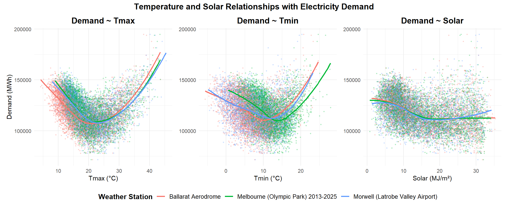
Table 1 indicates notable dependence between Tmax and Tmin (r ≈ 0.6–0.7) and moderately elevated VIFs, implying multicollinearity among raw station inputs. Since Victoria’s weather co-moves across sites, using all station variables risks unstable estimates.
| Tmax–Tmin Correlation and Multicollinearity (VIF) Summary | ||||
|---|---|---|---|---|
| Correlation reflects linear dependence between Tmax and Tmin; VIF values assess multicollinearity among predictors (Tmax, Tmin, Solar). | ||||
| Weather Station | Tmax–Tmin Corr. | VIF (Tmax) | VIF (Tmin) | VIF (Solar) |
| Ballarat Aerodrome | 0.72 | 4.18 | 2.37 | 2.27 |
| Melbourne (Olympic Park) | 0.69 | 2.60 | 1.93 | 1.56 |
| Morwell (Latrobe Valley) | 0.58 | 2.77 | 1.58 | 1.99 |
To address this, we apply Principal Component Analysis (PCA) to standardized station variables separately for Tmax, Tmin, and Solar. The first two components (PC1, PC2) explain ~ 87% of variance, capturing the statewide signal and inland–coastal contrasts. The resulting PCA-based weights (see in Table 2) quantify each station’s contribution to unified regional indices. Using PC1+PC2 loadings, we form tmax_pca, tmin_pca, and solar_pca, preserving key spatial structure while removing multicollinearity —- yielding more stable, interpretable weather inputs for modeling.
| PCA-Based Station Weights (PC1 + PC2 Combined) | |||
|---|---|---|---|
| PC1 = 68.5%, PC2 = 19.2% (Total = 87.6%) | |||
| Weather Station | Tmax | Tmin | Solar (MJ/m²) |
| Ballarat Aerodrome | 0.334 | 0.343 | 0.353 |
| Melbourne (Olympic Park) | 0.328 | 0.345 | 0.321 |
| Morwell (Latrobe Valley Airport) | 0.338 | 0.312 | 0.325 |
4.3 Temperature Feature Construction
Accurately representing thermal conditions is essential for modeling electricity demand, as temperature strongly drives both heating and cooling behavior. While the PCA-derived variables (tmax_pca, tmin_pca, solar_pca) already capture unified, multicollinearity-free weather signals across stations, the high correlation between tmax_pca and tmin_pca suggests they still express a shared latent temperature factor. To obtain more interpretable and functionally relevant predictors for demand modeling, we therefore derived composite temperature indicators that summarize overall comfort, diurnal variability, and thermal stress beyond simple maximum and minimum temperatures.
These composite indicators, summarized in Table 3, are evaluated against the original PCA-derived temperatures to determine which construction best captures demand sensitivity.
| Derived.Variable | Formula | Interpretation...Purpose |
|---|---|---|
| Tmean | (Tmean = (Tmax_pca + Tmin_pca) / 2) | Mean daily comfort temperature — represents the overall thermal level of each day, capturing both daytime and nighttime effects. |
| Trange | (Trange = Tmax_pca - Tmin_pca) | Diurnal temperature spread — measures day–night variability; large values imply potential for both daytime cooling and nighttime heating. |
| HDD | (HDD = max(0, 16.5 - Tmean_pca)) | Heating Degree Days (HDD) — quantifies heating demand when the mean temperature falls below 16.5 °C.(AEMO VIC threshold) |
| CDD | (CDD = max(0, Tmean_pca - 18.0)) | Cooling Degree Days (CDD) — quantifies cooling demand when the mean temperature exceeds 18.0 °C.(AEMO VIC threshold) |
Figure 3 visualizes the correlation structures (top) and the corresponding nonlinear demand–temperature relationships (bottom). The results show that the three temperature formulations—mean–range composites and degree-day metrics—exhibit progressively lower inter-variable correlation, indicating reduced redundancy among thermal indicators. While Tmean effectively captures broad comfort-related variations, and Trange represents the diurnal amplitude of temperature, the HDD/CDD transformation isolates heating and cooling effects more explicitly. Notably, the HDD/CDD metrics display an almost linear association with electricity demand, consistent with AEMO’s empirical temperature–load response behavior for Victoria.
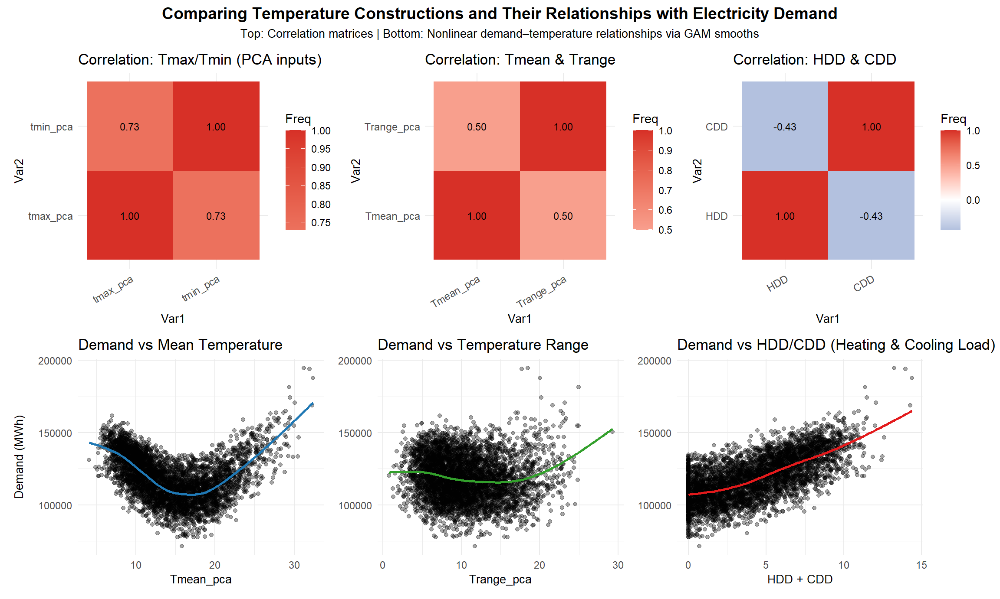
In Section 6.1, we compare model variants that incorporate these thermal indicators—assessing their explanatory power, predictive accuracy, and ability to capture nonlinear seasonal behavior.
4.4 Weather–Dependent Seasonal and Intraday Demand Patterns
Over the most recent six years, Victoria’s electricity demand patterns have shifted markedly across seasons. To ensure consistency with AEMO’s reporting conventions, monthly averages in Figure 4 (left) are plotted according to the AEMO season year (April–March) rather than the calendar year (January–December). As shown in Figure 4 (left), winter demand has increased, reflecting stronger heating requirements and limited rooftop PV generation during shorter daylight hours. In contrast, demand during summer, spring, and autumn has declined overall, largely due to longer daylight periods and the growing impact of rooftop PV generation offsetting daytime grid consumption.
The intraday demand profile in Figure 4 (right) further illustrates this evolution: as PV uptake has expanded, midday demand has progressively decreased, deepening the characteristic “duck curve.” However, during winter—when solar output and daylight hours are minimal—PV contributes little to offsetting load. This seasonal imbalance in solar influence results in a persistent winter sensitivity.
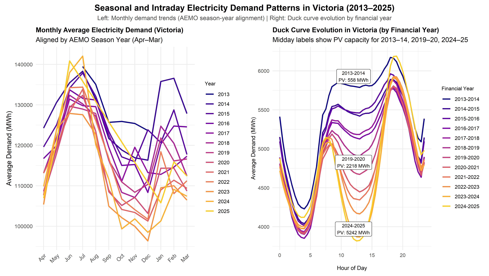
Electricity demand in Victoria also shows a clear and evolving sensitivity to temperature and solar exposure, as illustrated in Figure 5 and Figure 6. The relationship between temperature and demand forms a distinct U-shaped curve, with demand rising sharply under both cold and hot extremes. The steepening of this curve over time highlights intensifying heating and cooling sensitivities — reflecting evolving behaviour, appliance penetration, and PV adoption that reshape daily load profiles.
Seasonally, these relationships vary substantially:
Winter: Demand declines nearly linearly with temperature, as heating load dominates and warmer days reduce electricity use.
Summer: Demand rises with temperature but is moderated by PV generation, which offsets midday consumption.
Spring and Autumn: Transitional patterns show nonlinear responses, reflecting mixed heating and cooling effects.
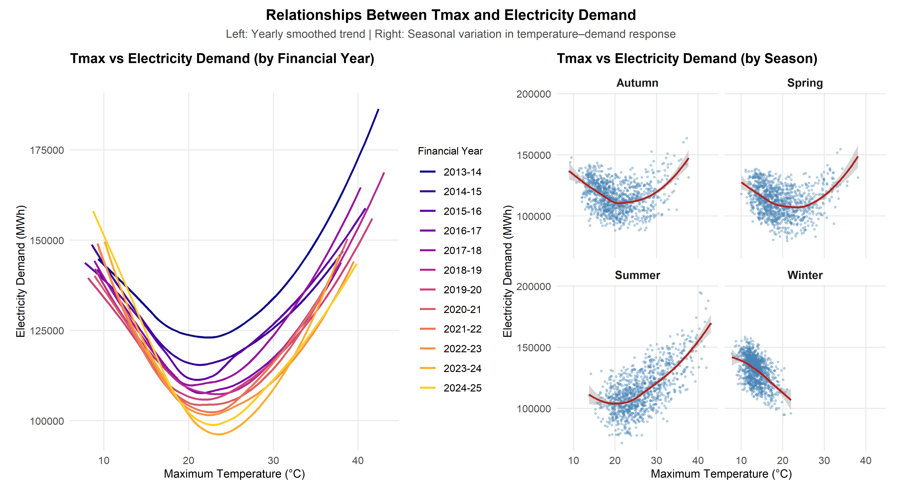
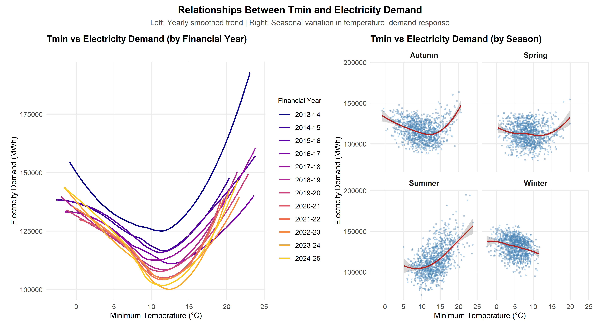
Solar exposure further introduces a moderating, time-dependent effect: high solar days now correspond to lower grid demand, particularly after 2019, when distributed PV generation became widespread. This inverse association is most evident in winter and the shoulder seasons, where low solar exposure (cloudy days) coincides with elevated demand.
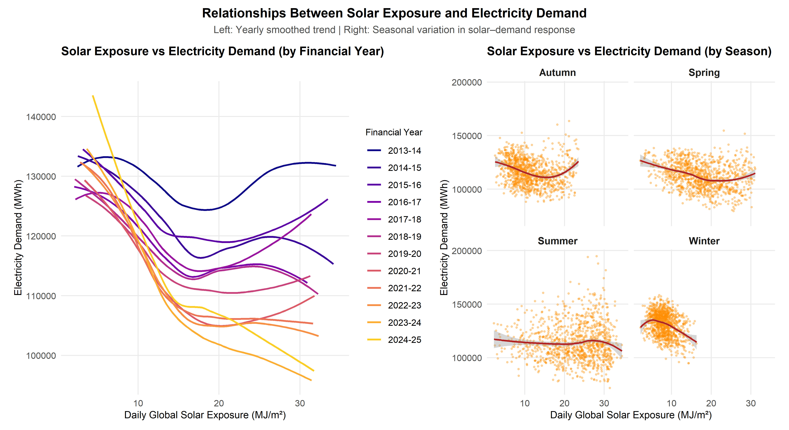
Collectively, these findings demonstrate that Victorian electricity demand has become more weather-dependent, nonlinear, and seasonally complex. Temperature remains the dominant driver, while solar exposure introduces critical interactions that vary across seasons and times of day. These dynamics justify the use of data-driven, seasonally adaptive modelling frameworks, such as local-season clustering and nonlinear GAMM structures introduced in Section 6.1, to capture evolving winter variability and temperature–solar interactions shaping Victoria’s electricity demand.
4.5 Local Season Clustering via GMM
Building on the patterns observed in Figure 4, where energy behaviours do not always align with traditional calendar seasons, we move beyond rigid calendar-based definitions of seasons by applying a Gaussian Mixture Model (GMM). The rationale is that the same temperature can elicit very different consumption responses depending on the season and perceived comfort level — for instance, 20 °C may be considered cool and heating-driven in summer but mild and comfortable in winter. By clustering days based on prevailing temperature and solar exposure patterns, the GMM identifies data-driven “local seasons” that better reflect the true meteorological and behavioural regimes influencing electricity demand
The clustering was performed using the daily PCA-composite weather features — tmax_pca, tmin_pca, and solar_pca — as the input variables. Before clustering, all features were standardized (mean = 0, sd = 1) to ensure equal weighting. Conceptually, the GMM assumes that these feature vectors come from a mixture of multivariate normal distributions, each representing a distinct weather regime. Each component is characterized by a mean vector (cluster centroid) and a covariance matrix (spread and orientation).
We used the mclust package in R, which automatically fits multiple candidate GMMs and selects the optimal number of clusters based on the Bayesian Information Criterion (BIC). Models with between 3 and 6 clusters were tested; the BIC indicated that a six-cluster solution achieved a good balance between parsimony and meteorological interpretability. The Gaussian Mixture Model (GMM) is applied as an intermediate feature-engineering step to identify data-driven weather regimes—referred to as local seasons. Unlike predictive models, GMM is not trained or tested for performance; instead, it is fitted once on the entire 2019–2025 weather dataset to capture the full range of climatic patterns. Using the PCA-combined weather features (Tmax, Tmin, and Solar), the GMM clusters days with similar weather conditions, allowing for soft probabilistic membership across transitional periods.
The month–cluster composition in Figure 8, together with the summary statistics in Table 4, demonstrates that the six GMM-defined local seasons effectively capture Victoria’s meteorological cycle with clear seasonal realism. Hot & Very Sunny and Warm & Bright clusters dominate from December to February, representing the hot, high-solar summer period. In contrast, Cold & Cloudy and Cold & Clear prevail from June to August, reflecting distinct winter regimes—the former associated with overcast, moisture-laden conditions, and the latter with clear, radiatively cold nights. Transitional regimes— Mild & Cloudy and Mild & Sunny—occur mainly in autumn (March–May) and spring (September–November), respectively, depicting smooth shifts between heating- and cooling-dominated periods across Victoria’s seasonal cycle.
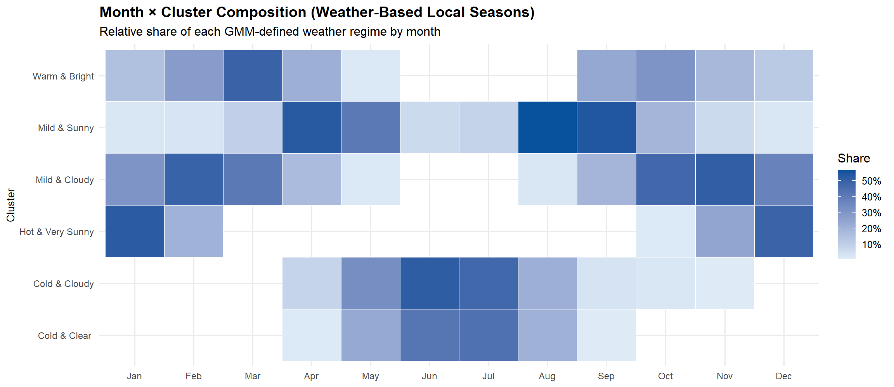
| Local Season Cluster Characteristics (GMM, Victoria) | |||||
|---|---|---|---|---|---|
| Cluster | Mean Tmax (°C) | Mean Tmin (°C) | Mean Solar (MJ/m²) | Key Features | Suggested Label |
| 1 | 13.51 | 2.95 | 8.78 | Very cold days with clear skies — classic deep winter conditions | Cold & Clear (Winter Peak) |
| 2 | 16.81 | 7.29 | 10.99 | Cool and mild with moderate sunlight — early spring | Mild & Sunny (Early Spring) |
| 3 | 13.14 | 6.94 | 6.79 | Cold, cloudy, low solar — overcast winter pattern | Cold & Cloudy (Winter Typical) |
| 4 | 26.17 | 10.90 | 18.51 | Warm and bright — late spring to early summer | Warm & Bright (Late Spring) |
| 5 | 27.10 | 12.50 | 28.10 | Hot and extremely sunny — midsummer conditions | Hot & Very Sunny (Summer Peak) |
| 6 | 19.96 | 12.06 | 16.66 | Mild warm nights and moderate sunlight — autumn pattern | Mild & Cloudy (Autumn Typical) |
This data-driven classification aligns broadly with conventional seasonal boundaries but provides greater granularity and flexibility, distinguishing between meteorologically meaningful sub-seasons that fixed calendar groupings cannot represent. The resulting local season labels thus form a robust categorical structure for regime-aware demand modeling, enabling temperature–demand relationships to adapt to actual weather regimes rather than arbitrary months.
4.6 Feature Engineering Summary
The feature-engineering process transformed raw weather, calendar, and demand data into a structured set of interpretable predictors that capture both short-term behavioral responses and long-term structural trends in Victoria’s electricity system. Each feature was motivated by EDA evidence and designed to align with real-world drivers of demand variability—ranging from temperature extremes and PV offset to seasonal clustering and autocorrelation effects.
As summarized in Table 5, the final feature set integrates six major categories: temporal controls, unified PCA weather signals, derived thermal indicators, autoregressive persistence, long-term cyclic trends, and regime-based seasonal factors.
| Category | Variable(s) | Description / Purpose |
|---|---|---|
| Temporal Features | `date`, `doy`, `dow`, `year`, `month`, `season`, `is_holiday` | Calendar-based controls for daily, weekly, and seasonal effects. `doy` (day-of-year) captures the annual cycle; `dow` (day-of-week) captures weekly load patterns; `is_holiday` flags public holidays and special events. |
| Temperature & Solar PCA | `tmax_pca`, `tmin_pca`, `solar_pca` | First two principal components (PC1 + PC2) of Tmax, Tmin, and solar exposure across multiple weather stations — removes multicollinearity and summarizes regional weather signals. |
| Derived Thermal Indicators | `Tmean_pca`, `Trange_pca`, `HDD`, `CDD` | `Tmean_pca` and `Trange_pca` represent mean and diurnal variability of daily temperature; `HDD` = max(0, 16.5 − Tmean_pca) and `CDD` = max(0, Tmean_pca − 18) follow AEMO VIC definitions, capturing heating and cooling intensity. |
| Autoregressive Features | `demand_lag1`, `demand_lag7` | Lagged demand terms capturing persistence effects: `demand_lag1` models previous-day correlation; `demand_lag7` captures weekly cyclic dependence. |
| Time Trend & Cyclic Terms | `t`, `sin_t = sin(2πt / 365.25)`, `cos_t = cos(2πt / 365.25)`, `t_sin = t × sin_t`, `t_cos = t × cos_t` | Continuous time index and its Fourier seasonal harmonics representing long-term structural trend and evolving intra-year periodicity (365.25-day cycle). |
| Local Season Regime | `local_season` | Categorical feature from Gaussian Mixture Model (GMM) clustering of PCA weather variables (Tmax, Tmin, Solar). Represents data-driven ‘local seasons’ (e.g., Hot & Sunny, Cold & Cloudy, Mild & Bright) for regime-aware modeling. |
Together, these engineered features provide a robust foundation for the subsequent GAM and GAMM modeling, enabling the models to capture nonlinear, time-varying, and regime-dependent demand responses.
In summary, the exploratory data analysis (EDA) reinforced several key modeling decisions:
the necessity of incorporating nonlinear temperature and solar terms;
the value of differentiating weather responses by season or regime, and accounting for calendar, trend, and autocorrelation effects; and
the growing influence of distributed PV uptake, suggesting that a unified model can effectively capture post-2019 dynamics when designed with appropriate weather, temporal, and regime-based features.
5 Methodology
Building on the engineered feature set, this section outlines the modeling framework used to quantify the drivers of electricity demand in Victoria. The approach centers on Generalized Additive Models (GAMs) and Generalized Additive Mixed Models (GAMMs), which flexibly capture nonlinear, time-varying, and regime-dependent effects. These models are particularly suited to the complex structure of electricity demand data, where temperature, solar exposure, and behavioral patterns interact in nonlinear ways.
We begin by describing the general GAM formulation, its smoothing structure, and the rationale for using nonlinear smooths over key predictors such as temperature and solar exposure. The subsequent section extends this to a mixed-effects GAMM, incorporating autocorrelation structures and local-season effects to address temporal dependence and weather-regime variation. Together, these methods provide a transparent and interpretable framework for modeling Victoria’s demand dynamics from 2019–2025.
5.1 Model Specification
The Generalized Additive Model (GAM) can be expressed as:
\[ y_t = \beta_0 + \sum_j f_j(x_{j,t}) + \varepsilon_t, \quad \varepsilon_t \sim N(0, \sigma^2) \]
where each smooth function f_j() captures a nonlinear effect of predictor x_{j,t} on the response y_t .
However, the standard GAM assumes that residuals are independent and homoskedastic, which may not hold in time-series or grouped data such as electricity demand.
To address this limitation, the model can be extended to a Generalized Additive Mixed Model (GAMM), which incorporates random effects and structured residual variance:
\[ y_t = \beta_0 + \sum_j f_j(x_{j,t}) + Zb + \varepsilon_t, \quad b \sim N(0, \Psi), \ \varepsilon_t \sim N(0, \Sigma) \]
Here, b represents random effects capturing within-group dependence (e.g., local weather regimes), while the residual variance structure Sigma allows for heteroskedasticity across groups.
This formulation enables the model to capture both nonlinear predictor effects and correlated or uneven residual variability.
The final model is specified as: Dₜ = t + tsinₜ + tcosₜ + Season + s(Tₓ, Season) + s(Tᵧ, Season) + s(Solar, Season) + ti(Tₓ, Solar) + ti(Tᵧ, Solar) + s(doy) + dow + is_holiday + Dₜ₋₁ + Dₜ₋₇
where Dₜ is daily electricity demand (MWh); Tₓ and Tᵧ denote temperature-related variables (e.g., Tmean, Trange, HDD, CDD); the smooth functions s() and tensor-product interactions ti() represent smooth and tensor interaction terms capturing nonlinear and interaction effects across seasons; and Dₜ₋₁ and Dₜ₋₇ are autoregressive lags accounting for short-term persistence and weekly patterns.
This specification was implemented using the mgcv package (Wood 2017) in R 4.5.1, leveraging bam() / gamm() for efficient estimation with correlated residual structures. Table 6 summarize the model variants.
| Model | Season | T_x, T_y |
|---|---|---|
| 1 | Month | Tmin, Tmax |
| 2 | Month | Tmean, Trange |
| 3 | Month | HDD, CDD |
| 4 | Traditional Season | Tmin, Tmax |
| 5 | Traditional Season | Tmean, Trange |
| 6 | Traditional Season | HDD, CDD |
| 7 | Local Season | Tmin, Tmax |
| 8 | Local Season | Tmean, Trange |
| 9 | Local Season | HDD, CDD |
5.2 Model Training and Validation
The modeling process employed a Generalized Additive Mixed Model (GAMM) framework trained on data from 1 July 2019 to 30 June 2024, with REML used to select optimal smoothing parameters.
The training workflow followed standard best practices:
Data split — training on 2019-07-01 to 2024-06-30, validation on 2024-07-01 to 2025-06-30.
Automatic smoothness selection — ensuring balance between flexibility and generalization.
Residual and diagnostic checks — confirming no systematic bias or autocorrelation.
Model performance was evaluated using three key metrics: Root Mean Square Error (RMSE), Mean Absolute Percentage Error (MAPE), and the Coefficient of Determination (R²) — alongside the Ljung–Box test for residual independence.
RMSE measures the square root of the average squared deviation between predicted and actual demand, providing a indicator of overall forecast accuracy while penalizing larger errors more heavily.
MAPE expresses the mean absolute deviation as a percentage of observed demand, enabling intuitive interpretation of forecast precision across different demand levels (e.g., a MAPE of 3% indicates that forecasts are typically within 3% of actual demand).
R² quantifies the proportion of variability in actual demand explained by the model, with higher values signifying stronger predictive and explanatory capability.
Ljung–Box test assesses whether residuals exhibit significant autocorrelation at specified lags. A non-significant result (p > 0.05) suggests that the residuals behave as white noise, indicating that the model has adequately captured temporal dependence in the data.
Together, these metrics offer a clear and balanced assessment of model performance, reflecting both the accuracy of the forecasts and the model’s ability to capture underlying weather–demand relationships
6 Results
In this section, we present the key results of the forecasting model, focusing on how well it performed and what insights can be drawn. Both quantitative accuracy metrics and qualitative consistency with domain expectations are examined to evaluate model reliability and interpretability.
6.1 Comparison with different verions
To systematically evaluate model performance, the workflow runs the full modeling pipeline — fitting each GAM formulation, evaluating training and testing metrics (R², RMSE, MAPE), checking residuals (Ljung–Box test) and comparing across the nine configurations that combine seasonal grouping and temperature construction.
As illustrated in Table 7, the Local Season formulation offers the best trade-off between predictive accuracy and statistical adequacy, supporting its adoption for subsequent model refinement and forecasting.
| Model | R² | RMSE | MAPE (%) | LB14 Pass? | LB28 Pass? |
|---|---|---|---|---|---|
| 01 Month — Tmin/Tmax | 0.934 | 4828.838 | 3.176 | No | Yes |
| 02 Month — Tmean/Trange | 0.926 | 5108.549 | 3.431 | No | No |
| 03 Month — HDD/CDD | 0.933 | 4860.641 | 3.265 | No | No |
| 04 Traditional Season — Tmin/Tmax | 0.936 | 4751.423 | 3.203 | No | No |
| 05 Traditional Season — Tmean/Trange | 0.933 | 4844.583 | 3.239 | No | No |
| 06 Traditional Season — HDD/CDD | 0.932 | 4885.123 | 3.356 | No | No |
| 07 Local Season — Tmin/Tmax | 0.932 | 4883.929 | 3.288 | Yes | Yes |
| 08 Local Season — Tmean/Trange | 0.933 | 4865.390 | 3.294 | Yes | Yes |
| 09 Local Season — HDD/CDD | 0.933 | 4842.428 | 3.341 | No | Yes |
6.2 Model Evaluation — Best Performing Model (Tmean_pca/Trange_pca with Local Season)
To assess the adequacy of the best-performing model (local-season GAM with Tmean_pca and Trange_pca), we examined residual diagnostics to verify model assumptions and check for remaining bias, heteroskedasticity, or autocorrelation.
Figure 9 shows the standard diagnostic plots from gam.check(). The residuals are approximately normally distributed with no significant skew or pattern, and the fitted values align closely with observed demand, indicating a strong model fit.
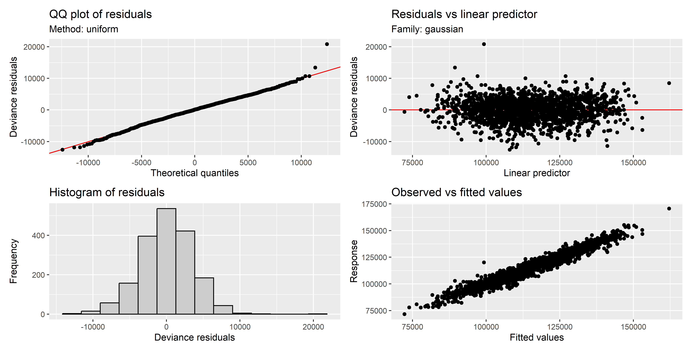
However, as shown in Figure 10, a slight winter bias remains—residuals during cold and cloudy regimes tend to underestimate demand. This pattern suggests that the model struggles to fully capture winter conditions, when solar generation is minimal and heating demand increases sharply. It also exhibits the greatest interannual variability in recent years, reflecting changing weather and behavioural dynamics. Nonetheless, residuals remain centered around zero across other seasons, confirming that the local-season framework effectively mitigates most seasonal heterogeneity.
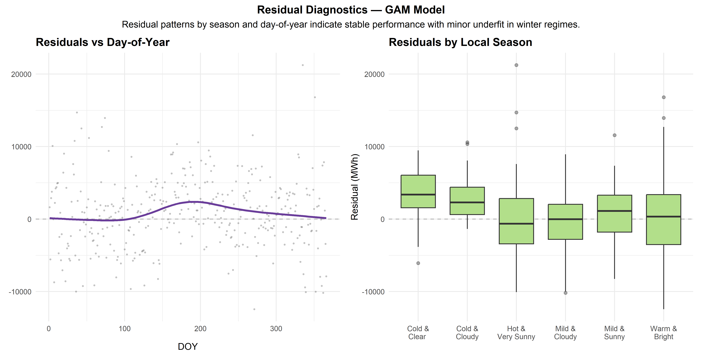
Overall, the diagnostics support that the chosen GAM structure is statistically adequate, with independent residuals, limited heteroskedasticity, and physically interpretable behavior across weather regimes.
6.3 Extending to GAMM: Addressing Heteroskedasticity
To address heteroskedasticity, we introduce a Generalized Additive Mixed Model (GAMM) with a group-specific variance structure: varIdent(~1 | local_season).
Incorporating a heteroskedastic variance structure stabilizes residuals across seasonal regimes, with variance highest under Cold & Clear and lowest under Mild & Moderate conditions (see @ tbl-variance).This allows residual variance to differ by local season, explicitly modeling heteroskedasticity rather than ignoring it. The approach yields more reliable standard errors and smoother residual behavior across conditions, particularly during extreme weather events.
| Local_Season | Variance_Multiplier |
|---|---|
| Cold & Clear | 1.00 |
| Cold & Cloudy | 0.00 |
| Hot & Very Sunny | 0.01 |
| Mild & Cloudy | 0.22 |
| Mild & Sunny | 0.04 |
| Warm & Bright | 0.22 |
Figure 11 confirms that the varIdent(~1 | local_season) specification effectively stabilizes residual variance while preserving model interpretability and out-of-sample performance.
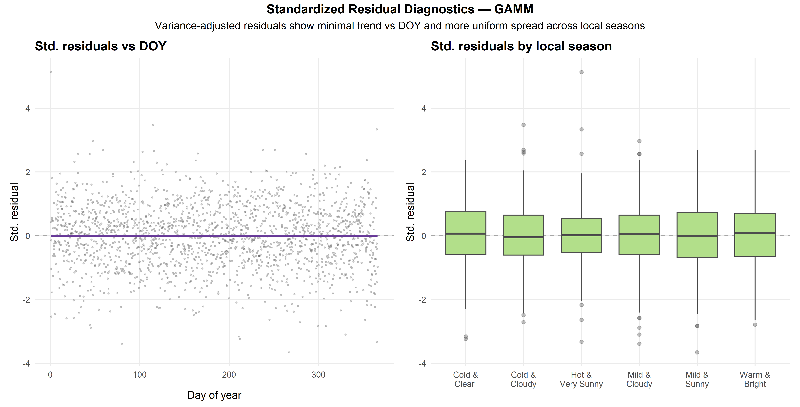
Then let’s check the overall performance of GAMM model. As shown in Figure 12, the variance-weighted GAMM maintains good fit (R² ≈ 0.94) and high predictive accuracy ( MAPE ≈ 3.28 %). the model exhibits slight underfitting during mid-winter periods—likely due to behavioural or heating-related nonlinearities not fully captured—and occasionally misses short-lived extreme demand spikes.
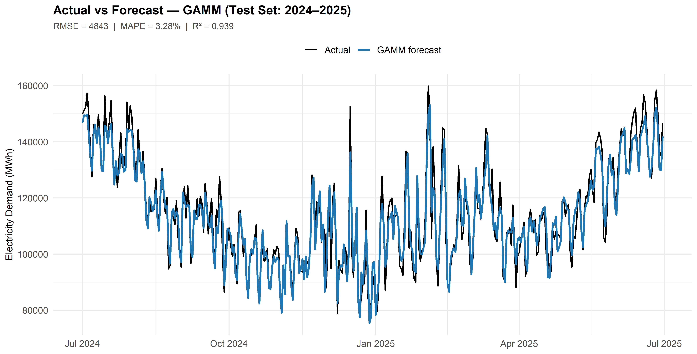
Nevertheless, residual diagnostics indicate no major departures from model assumptions: standardized residuals show no discernible structure and approximate homoskedastic, zero-mean behaviour (Figure 11), and formal checks including QQ, ACF, and response-vs-fitted plots reveal no significant distributional or independence violations (Figure 13).
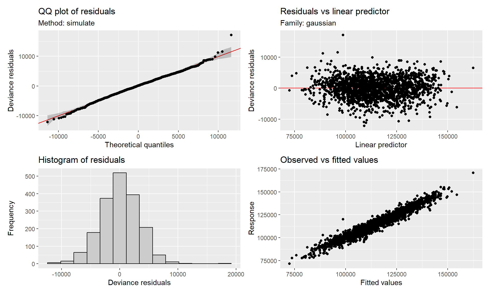
gratia::appraise(). The QQ-plot, residuals, and response–fitted checks confirm approximate normality and homoscedasticity.
Then, multi-horizon forecast accuracy was assessed using a recursive forecasting approach, in which the training window (2019–2024) was kept fixed while forecasts were generated sequentially over the 2024–2025 period. The variance-weighted GAMM exhibited consistently strong performance across multiple forecast horizons.
Short-term forecasts were highly reliable, achieving R² = 0.78–0.93 and MAPE = 1.68–2.58% for 3–14-day horizons. Even at the 30-day horizon, performance remained robust (R² = 0.87, MAPE = 2.51%), while the year-ahead forecast retained high explanatory power (R² = 0.94) with only moderate error (MAPE = 3.28%). Overall, forecast accuracy declined with increasing horizon length, though not always consistently across all periods. This irregularity likely reflects the limited validation window, which constrains the robustness of longer-horizon evaluation. Nevertheless, as summarized in Table 9, the model demonstrates strong reliability for short- to medium-term operational forecasting within approximately a one-year horizon.
| Horizon | R2 | RMSE | MAPE |
|---|---|---|---|
| 3-day | 0.776 | 2605.0 | 1.68 |
| 7-day | 0.932 | 4430.8 | 2.59 |
| 14-day | 0.932 | 3572.6 | 1.96 |
| 30-day | 0.868 | 4609.8 | 2.51 |
| 365-day | 0.939 | 4843.0 | 3.28 |
6.4 Out-of-sample forecasts
To evaluate short-term generalization beyond the training period, the variance-weighted GAMM was applied to forecast daily electricity demand for July 2025. As shown in Figure 14, the model continued to track observed demand closely beyond the training horizon, with forecast errors remaining low (RMSE ≈ 5.5 GWh, MAPE ≈ 3.14%)—slightly higher than the in-sample one-month-ahead accuracy, as expected.
These results indicate that the model generalizes well under new weather conditions, effectively capturing overall demand dynamics and weekly variation patterns. Minor underprediction during colder winter days suggests residual sensitivity to extreme low-temperature events, but overall the GAMM framework demonstrates strong robustness for short-term operational forecasting.
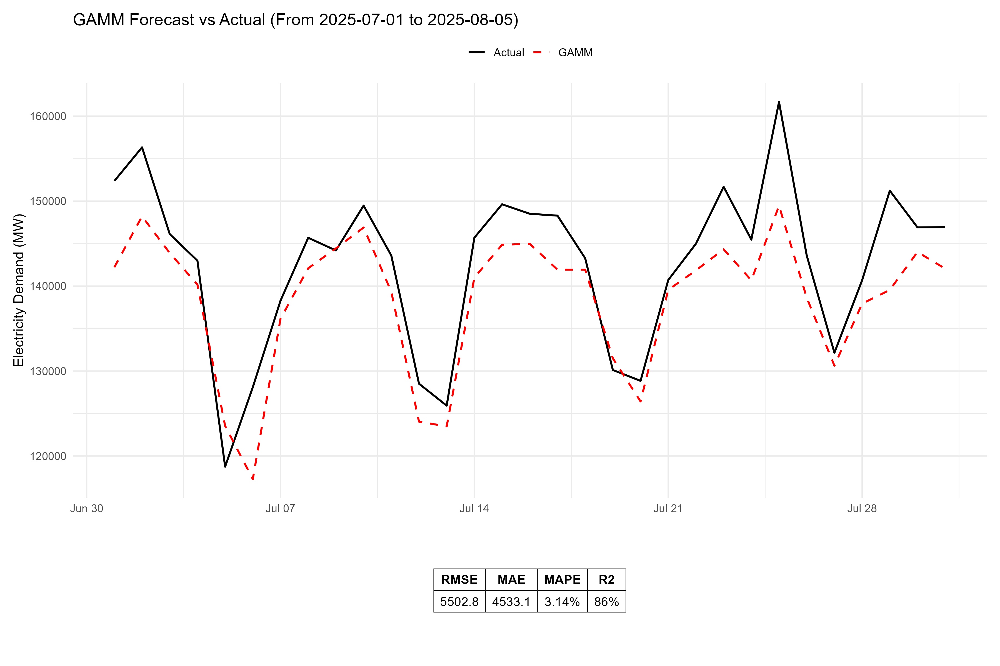
6.5 Interpretation of Model Components
Overall, the fitted GAMM effectively decomposes Victoria’s electricity demand into interpretable and physically consistent components. Temperature remains the dominant driver, exhibiting a clear asymmetry between heating- and cooling-related regimes ( Figure 15). Solar exposure exerts a consistently negative effect on demand ( Figure 17), reflecting the increasing influence of rooftop PV generation in reducing daytime grid load. The diurnal temperature range and solar–temperature interaction terms indicate that clear-sky conditions substantially moderate demand ( Figure 16), while the cyclic calendar smooth captures the expected winter and summer peaks ( Figure 18).
A concise summary of significant model components and their implications is presented in Table 10, while the full list of model terms and significance results is provided in Appendix A (Table 11). Collectively, these results demonstrate that the GAMM captures realistic, weather-dependent, and behavioral load dynamics with strong alignment to domain knowledge. For completeness, all smooth components are displayed in Appendix B ( Figure 15 to Figure 18).
| Grouped Interpretation of GAMM Smooth Terms | |||
|---|---|---|---|
| Summarising nonlinear effects of temperature, diurnal range, solar exposure, and seasonal patterns | |||
| Variable / Season | Shape | Interpretation | Key Takeaway |
| Temperature | |||
| Cold & Clear / Cold & Cloudy | Strong negative slope | Demand decreases sharply as temperature rises → heating-dominated response. | Heating dominates in cold regimes. |
| Hot & Very Sunny | Positive slope | Higher temperatures lead to higher load due to cooling demand. | Cooling dominates in hot regimes. |
| Mild & Cloudy / Warm & Bright / Mild & Sunny | U-shaped | Neutral near ~18–22 °C; higher demand at colder and hotter ends (transitional behaviour). | Balanced heating/cooling transition. |
| Temperature Range | |||
| Cold & Clear / Cold & Cloudy | Slightly negative or flat | Minimal sensitivity; cloud cover and heating dominate. | Heating still dominant. |
| Hot & Very Sunny / Mild & Sunny / Warm & Bright | Downward or weakly positive | Larger ranges (clear-sky days) coincide with strong solar generation → lower grid demand. | Clear-sky stability reduces demand. |
| Mild & Cloudy | Slight positive | Large ranges imply cooler nights needing more heating. | Minor heating sensitivity. |
| Solar Exposure | |||
| All regimes | Strong negative slope | Higher solar exposure → lower grid demand (behind-the-meter PV offset). | Solar consistently reduces demand. |
| Cold & Cloudy | Flat | Cloudy conditions limit variation; minimal solar-driven offset. | Little additional reduction. |
| Hot & Sunny / Mild & Sunny / Warm & Bright | Steeper decline | Strong PV output and daytime generation depress midday grid load ('duck curve'). | Solar effect strongest in bright conditions. |
| Interaction | |||
| ti(Tmean_pca, Trange_pca) | Nonlinear surface | High demand under low Tmean + low Trange (cold, cloudy); lowest demand under high Tmean + high Trange (warm, clear). | Solar moderates Trange effects. |
| ti(Tmean_pca, solar_pca) | Nonlinear surface | Solar moderates temperature response — warm, sunny days yield lower net demand. | Solar offsets temperature-driven load. |
| ti(Trange_pca, solar_pca) | Nonlinear surface | Clear, sunny days with large range → lowest demand; cold, low-solar days → highest. | Solar and range jointly suppress demand. |
| Calendar | |||
| s(doy) | Annual cyclic smooth | Winter & summer peaks; spring/autumn troughs. | Reflects heating/cooling seasonal cycles. |
7 Discussion
The results of this project demonstrate the effectiveness of a comprehensive, weather-dependent modeling approach for electricity load forecasting. Here we discuss the implications of these findings, the contributions and novelty of the work, and its limitations and potential improvements.
7.1 Meeting the objectives
Our primary objective was to forecast electricity load accurately by incorporating detailed, weather-dependent information.(see in Section 2.4) The GAMM model achieved this effectively, with forecast error to a daily MAPE of around 3.28 %(see in Figure 12), which is well within the industry experts’s knowledge of 3–5% for operational forecasting. This demonstrates that explicitly modeling nonlinear weather–demand relationships and integrating multiple meteorological inputs can yield substantial accuracy gains. The use of PCA to combine data from three stations proved particularly beneficial—it effectively created a unified, noise-reduced “virtual weather station” that captured regional weather dynamics more robustly while mitigating multicollinearity. Similarly, the GMM-based local season clustering enabled the model to adapt to distinct weather regimes, capturing both summer cooling and winter heating responses without forcing a single oversimplified temperature curve. This data-driven seasonal segmentation is relatively novel in load forecasting studies and showed tangible improvements in both model fit and residual structure. While a GAMM without clustering produced a marginally lower RMSE, it failed key diagnostic checks (e.g., residual autocorrelation), indicating that the clustered approach better represented underlying regime-specific behaviors critical for reliable operational forecasting.
7.2 Contributions and novelty
From a methodological perspective, this project combined several advanced techniques in a way that, to our knowledge, has not been widely reported in literature for this exact context. While GAMs have been used in load forecasting and are praised for interpretability, our work adds the element of unsupervised clustering to define seasons, and the integration of multi-source weather via PCA. This hybrid approach (mixing statistical learning and machine learning clustering) is one contribution. It required learning and applying diverse skills: data cleaning and merging (large time-series data handling), PCA and multivariate analysis, probabilistic clustering (GMM, including selection of cluster number via BIC), and sophisticated regression modeling (GAMM with VarIdent terms). The project thus involved a considerable degree of complexity – beyond a standard coursework exercise – pushing us to gain proficiency in multiple R packages and techniques. We also contributed to the data processing pipeline: for instance, writing functions to automate weather station data extraction and imputation, and creating visualizations (like animated plots of demand vs temperature over time) to communicate findings. These are practical contributions that could be reused in similar analyses or by the host organization (government energy department).
7.3 Practical implications
The resulting model is both accurate and interpretable, making it valuable for short-term operational forecasting and planning. System operators could use it for day-ahead demand forecasts, improving generator commitment efficiency and potentially reducing operational costs.
The interpretability of the GAMM provides clear insight into which weather conditions most stress the grid. For example, extremely hot, sunny days generate peak load pressures, while mild or high-solar days reduce demand via rooftop PV offset. The clustering approach could inform more flexible definitions of seasonal tariffs or demand-response triggers, based on meteorological regimes rather than rigid calendar months.
Furthermore, integrating multiple weather stations through PCA highlights the importance of spatially robust weather signals — a practice utilities and market operators could adopt more broadly, or extend with satellite and forecast ensemble data.
7.4 Limitations
Despite strong performance, several limitations remain:
- Dependence on observed weather: The model was evaluated using actual weather data; operational use would require forecast weather inputs, introducing additional uncertainty.
- Daily granularity: The model predicts total daily demand and does not capture intraday load shapes. Extending the approach to half-hourly data would be valuable for operational scheduling.
- Clustering design: Local seasons were derived solely from weather variables, not jointly with demand. While this avoids circularity, future work could explore hybrid clustering for potentially finer regimes.
- Variable scope: Humidity and wind chill were excluded due to limited data but could enhance the realism of comfort-related demand modeling.
- Evolving demand patterns: The assumption of stable weather–demand relationships may weaken over time as appliance efficiency, heating technology, and rooftop PV penetration evolve. Regular retraining is essential.
- Extrapolation risk: GAMs extrapolate linearly beyond the training range, so forecasts under unprecedented conditions (e.g., record heat or rapid PV uptake) may be unreliable.
7.5 Future work
Building on this foundation, several extensions are recommended:
Operational integration: Couple the GAMM with near-term weather forecasts (e.g., NWP outputs or ensembles) to produce probabilistic day-ahead forecasts.
Comparative modeling: Benchmark against black-box models to assess trade-offs between accuracy and interpretability.
Feature enrichment: Incorporate additional meteorological features (humidity, wind chill) and distributed PV generation data for improved physical realism.
Spatial scalability: Apply the framework to other regions or subzones, using regionalized GMM clustering to capture diverse climate–demand dynamics. as the energy landscape evolves — with growing EV adoption and battery participation — new model terms (e.g., EV charging demand or storage discharge flags) can be introduced; the GAM framework readily accommodates such extensions.
Evolving energy landscape: As electric vehicle (EV) adoption and battery participation increase, new explanatory variables such as EV charging load and battery discharge indicators can be integrated. The GAMM’s flexible additive structure readily accommodates such emerging factors, ensuring continued adaptability under evolving grid conditions.
8 Conclusion
In this project, we developed a comprehensive weather-dependent load forecasting model for Victoria’s daily electricity demand, leveraging modern statistical techniques to integrate multiple data sources. Through Principal Component Analysis (PCA), we combined multi-station weather data into robust regional indicators, and through Gaussian Mixture Model (GMM) clustering, we discovered nuanced local-season regimes that improved the model’s ability to handle seasonal transitions and weather extremes. The use of a Generalized Additive Mixed Model (GAMM) enabled the capture of complex nonlinear dependencies (temperature–demand curves) and allowed for different variance by regime, yielding a well-calibrated model with near-white-noise residuals.
The model achieved strong predictive performance and effectively anticipated demand peaks and troughs in a period marked by high weather volatility and increasing rooftop solar PV penetration. The inclusion of solar exposure as a predictor was particularly impactful, quantifying the reduction in grid demand from distributed generation — a crucial factor in modern energy systems. The interpretability of the GAMM provided actionable insights: for example, the estimated temperature–demand curves and solar effects revealed how much additional demand arises per degree drop on cold days and how much solar exposure offsets demand on clear summer days. These insights have practical implications for system operations (e.g., triggering demand response during heatwaves) and energy policy (e.g., quantifying the benefit of efficiency measures in winter heating).
In summary, this study demonstrates a successful synthesis of data-driven modelling and domain knowledge in short-term load forecasting. By unifying regional weather data, objectively defining local-season clusters, and employing a flexible nonlinear model structure, we achieved both high accuracy and interpretability. These attributes make the approach practical and trustworthy for planners and policymakers who require not only reliable forecasts but also a clear understanding of demand drivers. Moving forward, adopting such methodologies can enhance grid resilience, support renewable integration, and ensure reliable power supply amid increasing weather variability and evolving consumption patterns.
(APPENDIX) Appendices
8.1 (APPENDIX A) Full GAMM Term Extraction
This appendix provides the full table of smooth, tensor, and parametric terms from the fitted GAMM, including significance levels and interpretation categories. For clarity, only summarized interpretations are discussed in Section Section 6.5, while the detailed term listing is shown below.
| Term | pval | Signif | Type | Interpretation |
|---|---|---|---|---|
| s(Tmean_pca):local_seasonCold & Clear | 0.00e+00 | *** | Smooth / Tensor | Nonlinear temperature–demand response by local season |
| s(Tmean_pca):local_seasonCold & Cloudy | 6.93e-07 | *** | Smooth / Tensor | Nonlinear temperature–demand response by local season |
| s(Tmean_pca):local_seasonHot & Very Sunny | 0.00e+00 | *** | Smooth / Tensor | Nonlinear temperature–demand response by local season |
| s(Tmean_pca):local_seasonMild & Cloudy | 0.00e+00 | *** | Smooth / Tensor | Nonlinear temperature–demand response by local season |
| s(Tmean_pca):local_seasonMild & Sunny | 0.00e+00 | *** | Smooth / Tensor | Nonlinear temperature–demand response by local season |
| s(Tmean_pca):local_seasonWarm & Bright | 0.00e+00 | *** | Smooth / Tensor | Nonlinear temperature–demand response by local season |
| s(Trange_pca):local_seasonCold & Clear | 4.05e-01 | Smooth / Tensor | Effect of diurnal temperature range by local season | |
| s(Trange_pca):local_seasonCold & Cloudy | 9.49e-01 | Smooth / Tensor | Effect of diurnal temperature range by local season | |
| s(Trange_pca):local_seasonHot & Very Sunny | 3.21e-02 | * | Smooth / Tensor | Effect of diurnal temperature range by local season |
| s(Trange_pca):local_seasonMild & Cloudy | 5.81e-03 | ** | Smooth / Tensor | Effect of diurnal temperature range by local season |
| s(Trange_pca):local_seasonMild & Sunny | 4.18e-01 | Smooth / Tensor | Effect of diurnal temperature range by local season | |
| s(Trange_pca):local_seasonWarm & Bright | 2.02e-02 | * | Smooth / Tensor | Effect of diurnal temperature range by local season |
| s(solar_pca):local_seasonCold & Clear | 4.93e-02 | * | Smooth / Tensor | Solar exposure (PV offset and daylight influence) |
| s(solar_pca):local_seasonCold & Cloudy | 9.76e-04 | *** | Smooth / Tensor | Solar exposure (PV offset and daylight influence) |
| s(solar_pca):local_seasonHot & Very Sunny | 4.15e-01 | Smooth / Tensor | Solar exposure (PV offset and daylight influence) | |
| s(solar_pca):local_seasonMild & Cloudy | 0.00e+00 | *** | Smooth / Tensor | Solar exposure (PV offset and daylight influence) |
| s(solar_pca):local_seasonMild & Sunny | 0.00e+00 | *** | Smooth / Tensor | Solar exposure (PV offset and daylight influence) |
| s(solar_pca):local_seasonWarm & Bright | 8.57e-03 | ** | Smooth / Tensor | Solar exposure (PV offset and daylight influence) |
| ti(Tmean_pca,Trange_pca) | 2.31e-02 | * | Smooth / Tensor | Interaction: Temperature × Diurnal range |
| ti(Tmean_pca,solar_pca) | 0.00e+00 | *** | Smooth / Tensor | Interaction: Temperature × Solar exposure |
| ti(Trange_pca,solar_pca) | 8.83e-02 | Smooth / Tensor | Interaction: Diurnal range × Solar exposure | |
| s(doy) | 0.00e+00 | *** | Smooth / Tensor | Smooth annual cycle (residual seasonality) |
| (Intercept) | 2.07e-90 | *** | Parametric | Other model term |
| t | 2.33e-06 | *** | Parametric | Long-term or harmonic temporal trend |
| t_sin | 6.83e-03 | ** | Parametric | Long-term or harmonic temporal trend |
| t_cos | 1.69e-38 | *** | Parametric | Long-term or harmonic temporal trend |
| dow.L | 0.00e+00 | *** | Parametric | Day-of-week fixed effect |
| dow.Q | 8.01e-36 | *** | Parametric | Day-of-week fixed effect |
| dow.C | 1.09e-01 | Parametric | Day-of-week fixed effect | |
| dow^4 | 6.89e-66 | *** | Parametric | Day-of-week fixed effect |
| dow^5 | 2.18e-45 | *** | Parametric | Day-of-week fixed effect |
| dow^6 | 7.39e-09 | *** | Parametric | Day-of-week fixed effect |
| local_seasonCold & Cloudy | 7.59e-02 | Parametric | Other model term | |
| local_seasonHot & Very Sunny | 3.06e-01 | Parametric | Other model term | |
| local_seasonMild & Cloudy | 9.10e-05 | *** | Parametric | Other model term |
| local_seasonMild & Sunny | 3.15e-02 | * | Parametric | Other model term |
| local_seasonWarm & Bright | 1.99e-03 | ** | Parametric | Long-term or harmonic temporal trend |
| is_holidayTRUE | 6.06e-80 | *** | Parametric | Public holiday effect (reduced demand) |
| demand_lag1 | 1.51e-96 | *** | Parametric | Short-term persistence (previous day demand) |
| demand_lag7 | 8.41e-05 | *** | Parametric | Weekly persistence (previous week demand) |
8.2 (APPENDIX B) Full GAMM Smooth Plots
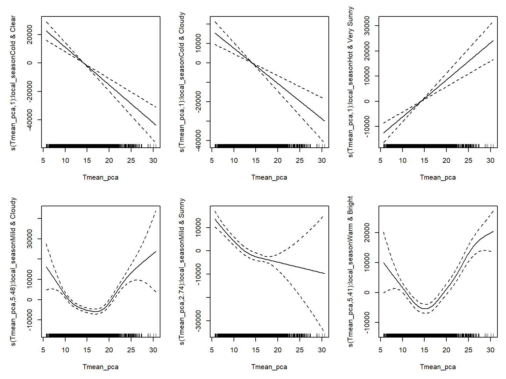
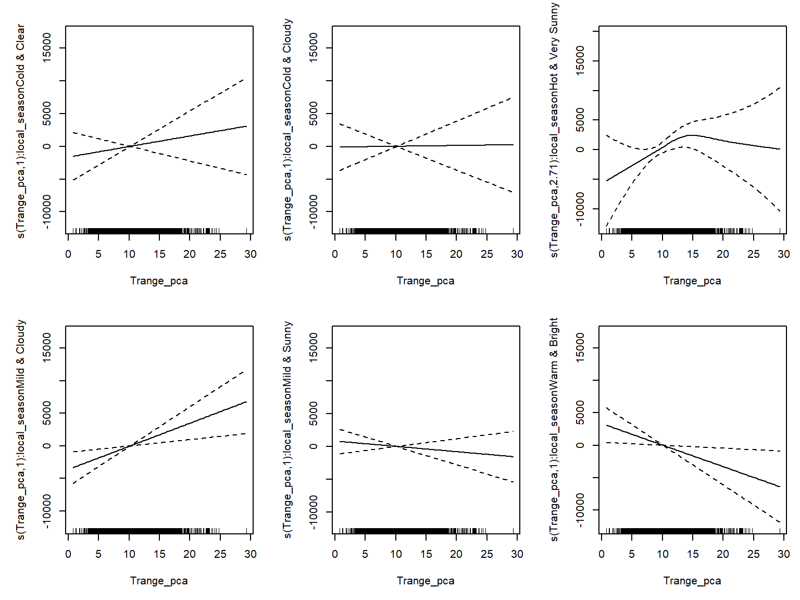
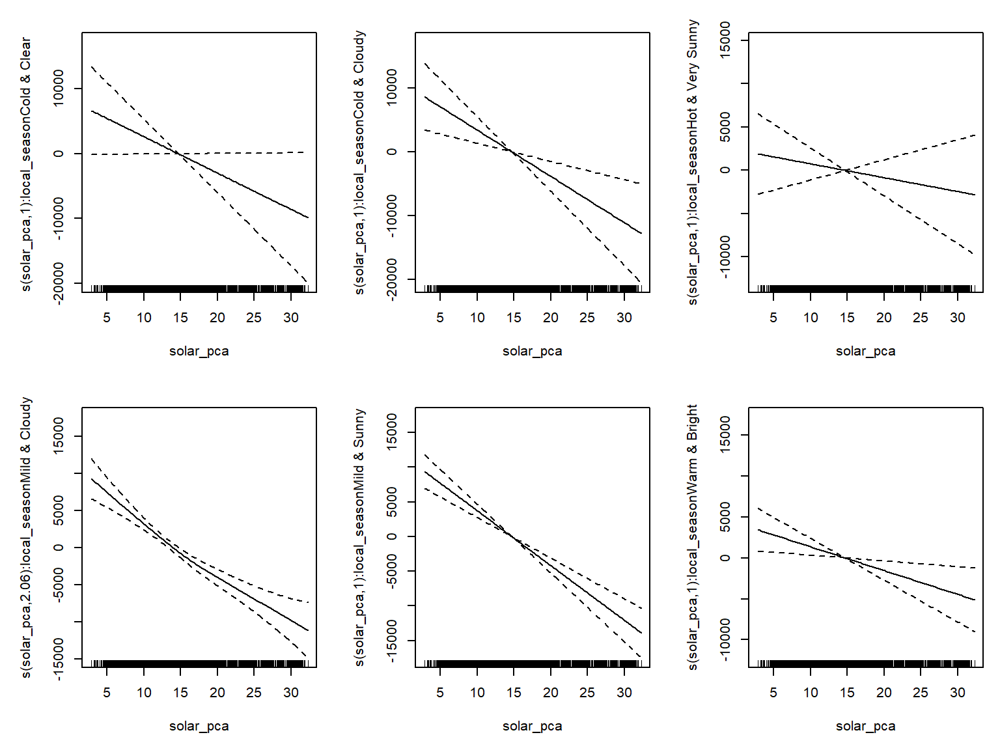
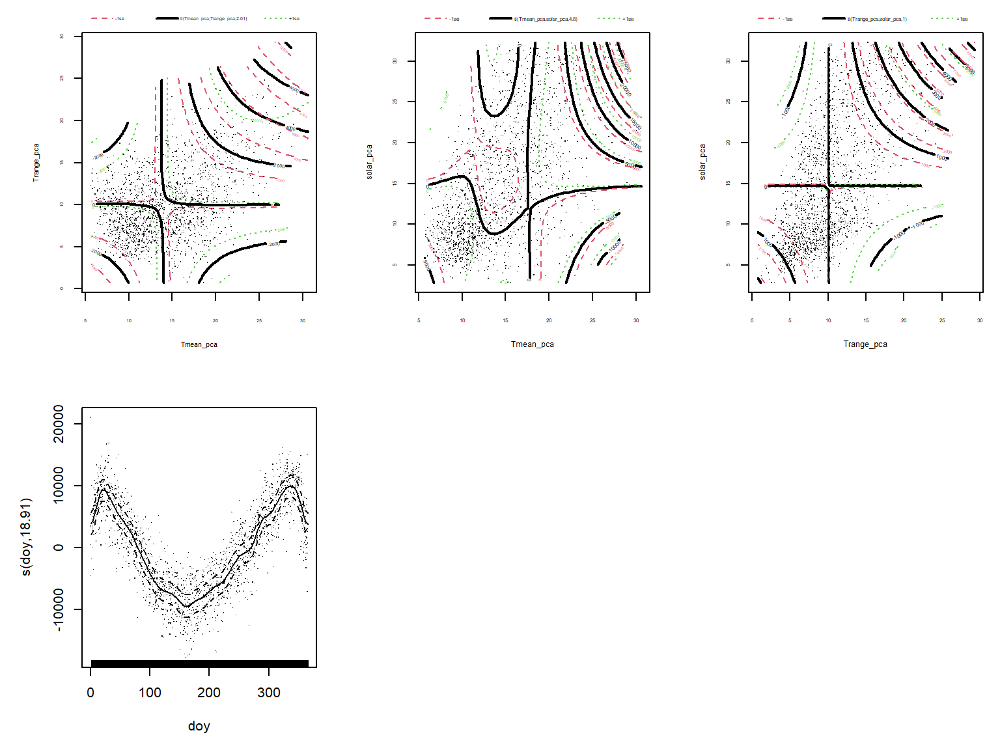
These figures display all smooth terms from the fitted GAMM, including temperature-, solar-, and range-related effects by local season, interaction tensors, and cyclic seasonal components. They are included here for completeness; main findings are discussed in Section 6.5.
References
AEMO. 2024. “Electricity Demand Forecasting Methodology.” Australian Energy Market Operator. https://www.aer.gov.au.
Aquila, G., A. R. de Queiroz, E. de O. Pamplona, and P. R. M. Junior. 2023. “Short-Term Load Forecasting for Operational Planning: Overview.” Energies 16 (21): Article 21. https://scholars.duke.edu.
Australian Energy Council. 2019. “Solar Report – June 2019.” https://www.energycouncil.com.au.
Baur, L., K. Ditschuneit, M. Schambach, C. Kaymakci, T. Wollmann, and A. Sauer. 2024. “Explainability and Interpretability in Electric Load Forecasting Using Machine Learning Techniques: A Review.” Energy and AI 16: 100358. https://doi.org/10.1016/j.egyai.2024.100358.
Clean Energy Regulator (CER). 2024. “Small-Scale Renewable Energy Scheme Data — Postcode Installations.” https://cer.gov.au/markets/reports-and-data/small-scale-installation-postcode-data.
Essential Services Commission. 2025. “Draft Decision on Solar Feed-in Tariffs.” https://www.pv-magazine-australia.com.
Fan, J., C. Zhang, and Y. Wang. 2022. “Nonlinear Models for Short-Term Electricity Demand Forecasting Under Climate Variability.” Energy Economics 108: 105872. https://doi.org/10.1016/j.eneco.2022.105872.
Hastie, T., and R. Tibshirani. 2017. Generalized Additive Models. Chapman; Hall/CRC. https://www.taylorfrancis.com/books/mono/10.1201/9780203753781/generalized-additive-models-hastie.
Misiurek, Kamil, Tadeusz Olkuski, and Janusz Zyśk. 2025. “Review of Methods and Models for Forecasting Electricity Consumption.” Energies 18 (15): 4032. https://doi.org/10.3390/en18154032.
Neumann, O., C. Heine, and W. Fichtner. 2023. “Using Weather Data in Energy Time Series Forecasting: The Benefit of Input Data Transformations.” Energy Informatics 6 (44). https://energyinformatics.springeropen.com.
Wood, S. N. 2017. Generalized Additive Models: An Introduction with r. 2nd ed. Chapman; Hall/CRC. https://www.taylorfrancis.com/books/mono/10.1201/9781315370279/generalized-additive-models-simon-wood.